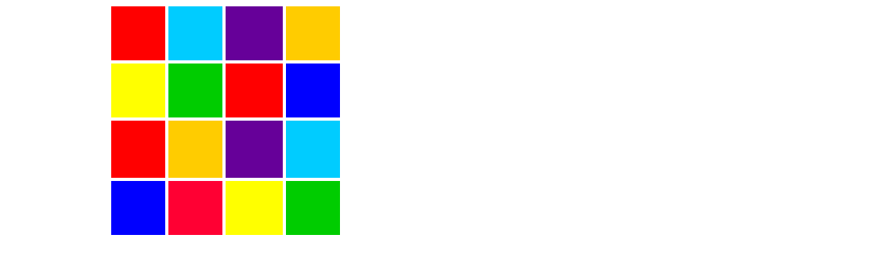

Social networks are computer-hosted websites or services that allow humans to connect and share information about themselves with another human virtually.

This makes SixDegrees the first social media service to pioneer this form, leaving room for other websites like Facebook to continue innovating prior to the creation of SixDegrees.